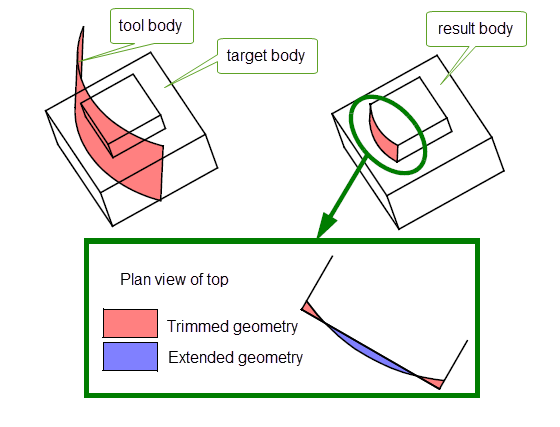
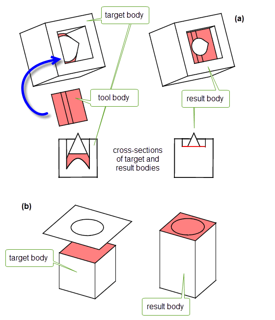
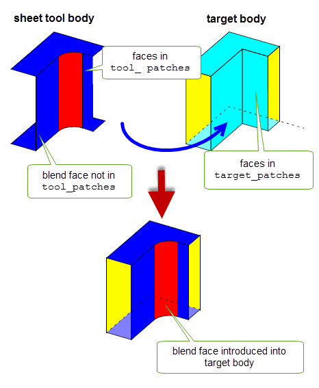
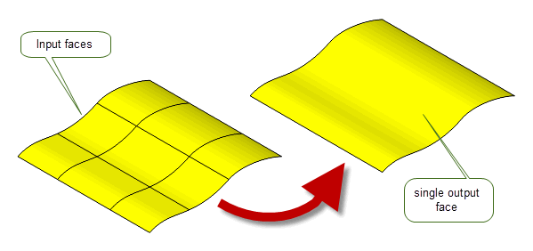

| |
Patching |
| <<< Body Tapering | Chapters | Filling Holes In A Body >>> |
This chapter describes the different Parasolid functionalities you can use to modify a body by replacing faces with a sheet body, a surface or a single face.
You can use PK_FACE_replace_with_sheet to replace a set of target faces within a body with a set of tool faces from a sheet body.
Parasolid deletes the faces specified for replacement, keeps the geometry of the surrounding faces, and extends or trims it to make it fit to the tool sheet body. For example, surrounding faces are extended or trimmed if the boundaries of the tool faces are not coincident with the supplied target faces.
Figure 69-1 shows an example in which a side face of a boss is replaced with a specified tool. The illustration shows how geometry in the top face of the boss is extended in some parts, and trimmed in others, in order to intersect the tool with the target. Geometry in other faces is recalculated similarly, but is not shown explicitly in the illustration.
Figure 69-2 shows some examples where a face in the target (the bottom face of a cone embedded in a box) is replaced by multiple faces in the specified sheet tool. Figure 69-2 (a) shows cross-sections of the target and result bodies so that you can see more easily what is being replaced
Figure 69-1 Replacing faces in a target body with a face from a sheet tool
Figure 69-2 Replacing a face in a target body with multiple faces from a sheet tool
An accompanying PK_FACE_replace_with_sheet_o_t options structure contains options allowing you to specify tolerance information for the operation, face-face consistency checking behaviour, and patch data when replacing specific faces in a body, as described in Section 69.3, “Replacing specific target faces with specific tool faces”.
To successfully replace a set of faces in a target body, you must observe the following restrictions:
patch_data
associated with the operation: see Section 69.3, “Replacing specific target faces with specific tool faces” for more information.
You can use the
patch_data
option in PK_FACE_replace_with_sheet_o_t to explicitly map faces in the sheet tool body onto faces to be replaced in the target body. This can be particularly useful if you are importing data into your application, and want to introduce features from the imported data, such as blend faces, into your model.
The
patch_data
option contains a number of fields that you use to map tool faces onto target faces, as follows:
patch_type |
Whether to map specific tool faces onto target faces. This can take one of the following values:
When |
n_matches |
The number of tool faces to be mapped to target faces. The |
tool_patches |
A list of tool faces to use as patches on the target body. Each face in this array replaces the corresponding face in the |
target_patches |
A list of target faces that you want to replace with faces from the |
n_patch_edges |
|
patch_edges |
The boundary edges of the patch tool that are to be imprinted onto the target body. Default: NULL. |
You can use
n_patch_edges
and
patch_edges
to explicitly imprint edges of a tool body onto a target body as part of a patch operation.
Figure 69-3 shows an example of this.The gray faces on the resultant body are new faces created where portions of the target faces are not covered by the tool.
Figure 69-3 Mergeable patch edges
Figure 69-4 shows an example in which four faces from a tool body are mapped directly onto four faces from the corresponding target. The fifth face in the tool - a blend face - is not mapped directly, and can therefore be introduced into the target body in the desired position.
Figure 69-4 Using patch data to introduce a blend face into a body
As introduced in Chapter 63, “Overview of Editing Models”, PK_BODY_fill_hole is a powerful function that lets you fill holes in a model with a powerful range of controls. See Chapter 70, “Filling Holes In A Body”, for complete information.
Sometimes, when creating sheet bodies, you can be left with rubber faces (that is, topology that has no geometry attached). This can happen, for instance, when scribing lines on a minimum body. In such cases, Parasolid can create and attach a surface that fits the rubber face for you.
PK_FACE_attach_surf_fitting creates a surface to fit and attach to a face. This function replaces any existing surface geometry, making the result a valid sheet body. Use PK_FACE_attach_surf_fitting whenever you create a sheet body by scribing lines on a minimum body.
|
Note: This functionality does not support facet geometry. |
You can replace a set of smoothly connected faces with a single face using PK_FACE_cover. This function receives an array of faces and a set of options. The faces must form a connected set, which should not be closed. The internal edges of this face set must be visibly G1 smooth. The single face that is created by the function has a single fitted B-surface attached.
Figure 69-5 shows a simple example in which a grid of connected faces has been replaced by a single face.
Figure 69-5 Replacing a grid of faces with a single face
|
Note: This functionality does not support facet geometry. |
You can control the behaviour of PK_FACE_cover using the following options:
fitting_tolerance |
The tolerance to within which the replacement face is created.
If |
have_bdry_tolerance bdry_tolerance |
An optional boundary tolerance for the operation. If
Any supplied
The default is to not supply a boundary tolerance; the resulting face is fitted to within the specified |
maintain_bdry_smoothness |
Controls whether to maintain the smoothness of any visibly smooth boundary edges of the face set. Default: PK_FACE_cover_smooth_no_c. |
output |
Controls whether to replace the original face set with the new face (Default), or whether to return it as a separate trimmed sheet. |
param_prefer |
Where several parameterisations are possible, this option controls which one to attempt when replacing a set of faces with a single face. It takes the following values:
|
update |
If your application relies on reproducing behaviour when updating models built using earlier versions of Parasolid, you can use the |
Figure 69-6 Controlling the parameterisation when replacing a set of faces with a single face
PK_FACE_cover returns tracking information for the operation, the nature of which varies depending on the setting of the
output
option.
In addition, PK_FACE_cover writes information to the Parasolid Report. Reports of different types are created, depending on the success of the operation and the nature of the resulting face:
| <<< Body Tapering | Chapters | Filling Holes In A Body >>> |